Motorprüfstand zur Fahrzeugdiagnose und Fehlersimulation
Abschlussarbeit Maschinenbau – Fahrzeugwartung und Fahrzeugdiagnose
ISET Nabeul · Tunesien
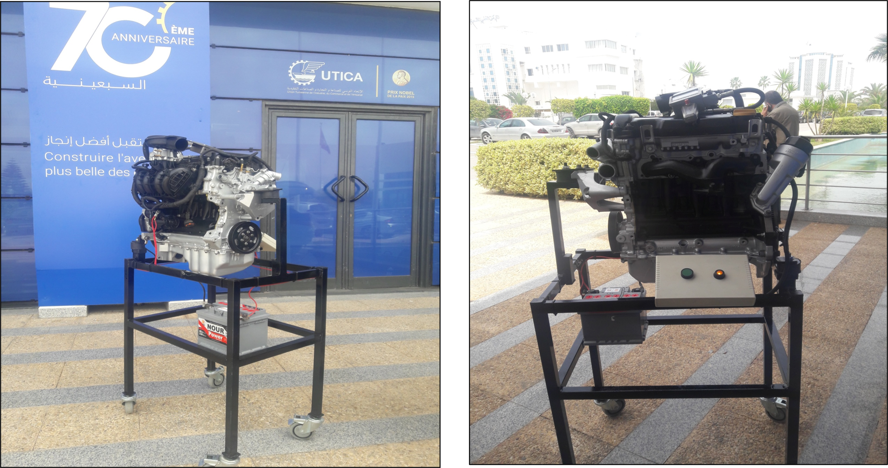
Projektbeschreibung
Im Rahmen meiner Abschlussarbeit entwickelte und realisierte ich gemeinsam mit einem Kommilitonen einen didaktischen Motorprüfstand auf Basis eines ausgedienten Verbrennungsmotors des Opel Astra G 1.2 ECOTEC.
Zielsetzung
Ziel war die Entwicklung eines mobilen Lehrmodells, das Studierenden folgende praktische Übungen ermöglicht:
- Untersuchung des Aufbaus und der Funktionsweise eines Verbrennungsmotors.
- Diagnose von Kompressionsverlusten und Undichtigkeiten im Brennraum.
- Demontage und Montage der Steuerkette.
- Einstellung und selbstständige Überprüfung der Steuerzeiten.
- Identifikation von Sensoren und Aktoren des Motormanagements.
Technische Realisierung
Demontage und Aufbereitung
Vollständige Zerlegung des Motors, Reinigung der Einzelkomponenten mittels Teilereinigung, Hochdruckreinigung und Sandstrahlen sowie anschließende Lackierung.
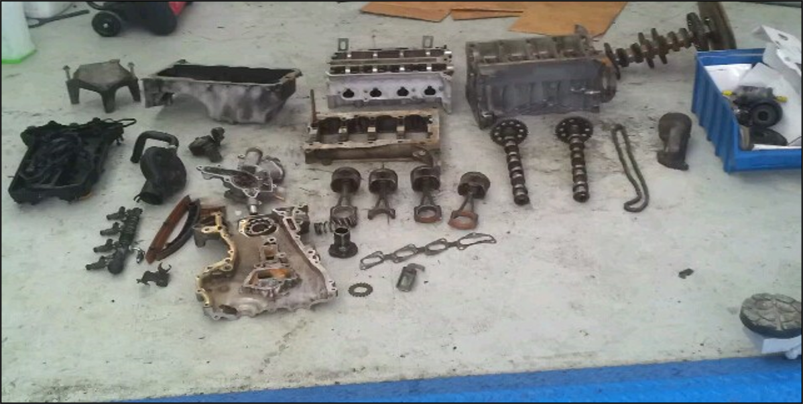
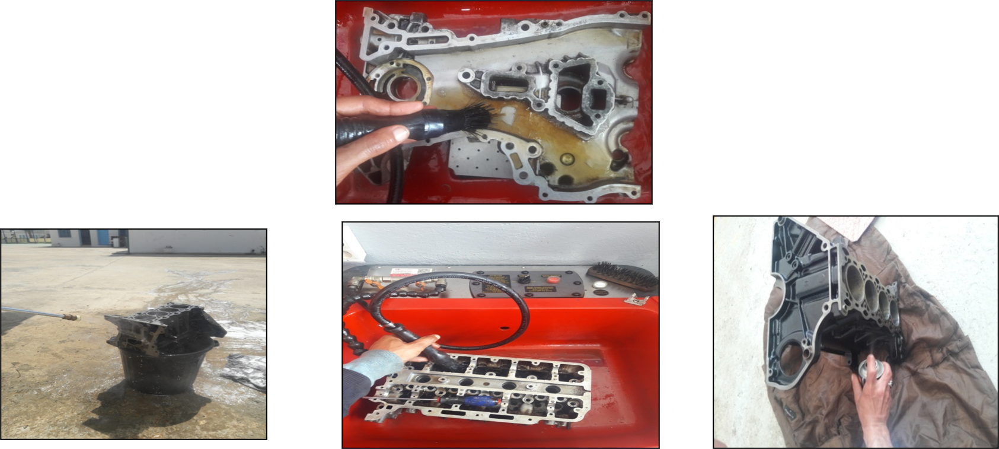
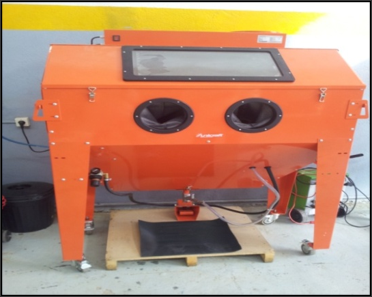
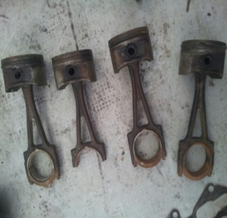
Ventilbearbeitung und Dichtheitsprüfung
Einschleifen ausgewählter Ventile mit einem pneumatischen Werkzeug und anschließende Überprüfung der Dichtheit mittels Druckluft.
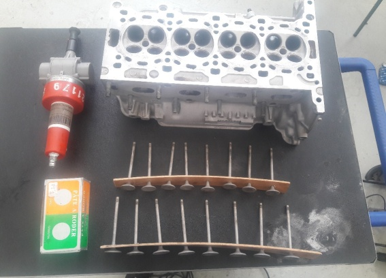
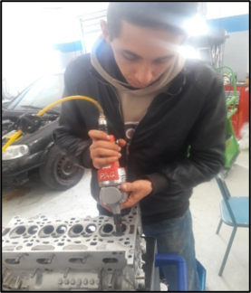
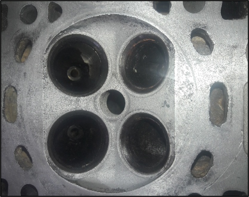
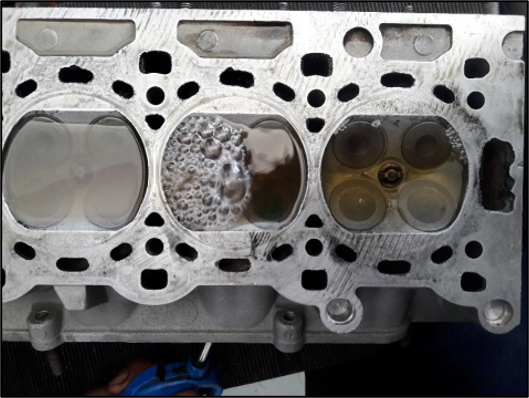
Gezielte Fehlersimulation
Integration unterschiedlicher mechanischer Fehlerbilder zur Untersuchung von Kompressionsverlusten:
| Zylinder | Fehlerbild |
|---|---|
| 1 | Referenzzylinder ohne gezielten Fehler |
| 2 | Undichte Einlassventile |
| 3 | Undichte Auslassventile |
| 4 | Vergrößertes Stoßspiel der Kompressionsringe |
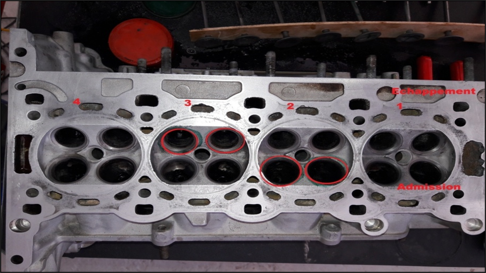
Zusammenbau des Motors
Austausch ausgewählter Verschleißteile, Montage der Motorkomponenten sowie Einbau der Steuerkette und Einstellung der Steuerzeiten.
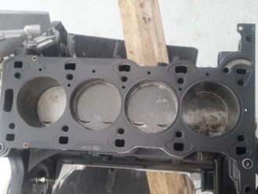
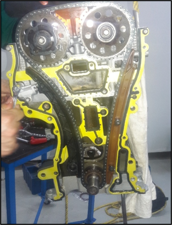
Elektrische Kontrolle der Steuerzeiten
Entwicklung einer elektrischen Prüfschaltung mit zwei Positionskontakten an der Kurbelwelle und der Auslassnockenwelle. Eine LED signalisiert das gleichzeitige Erreichen der vorgesehenen Einstellpositionen beider Wellen.
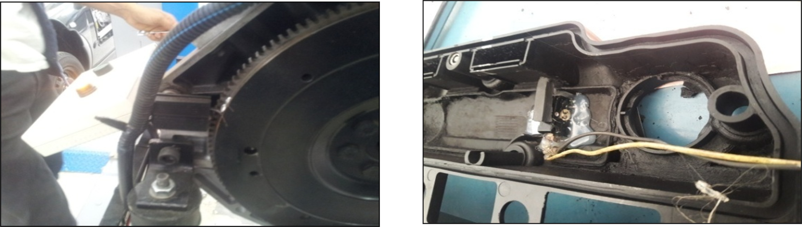
Fertigung des Motorgestells
Fertigung eines mobilen Stahlgestells mittels Zuschnitt und Lichtbogenschweißen mit integrierter Motoraufnahme, Batterieablage und vier Transportrollen.
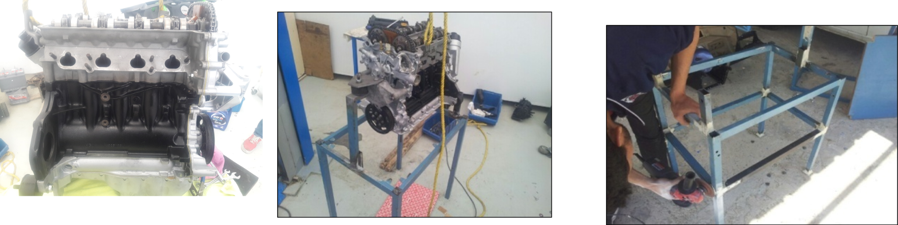
Projektergebnis
Aus einem ausgedienten, nicht mehr funktionsfähigen Verbrennungsmotor, der ungenutzt in der Hochschulwerkstatt stand, entstand ein didaktisches Lehrmodell mit einer neuen Aufgabe. Statt den Motor zu entsorgen, haben wir ihm neues Leben eingehaucht und ihn zu einem praxisorientierten Ausbildungssystem umgebaut.
Studierende haben dadurch die Möglichkeit, an einem realen Verbrennungsmotor zu arbeiten, Fehlerdiagnosen durchzuführen und Demontage- sowie Montagearbeiten zu üben. Dabei können sie ihre praktischen Fähigkeiten und ihr Selbstvertrauen stärken, ohne Angst vor irreparablen Schäden an einem funktionsfähigen Motor haben zu müssen.